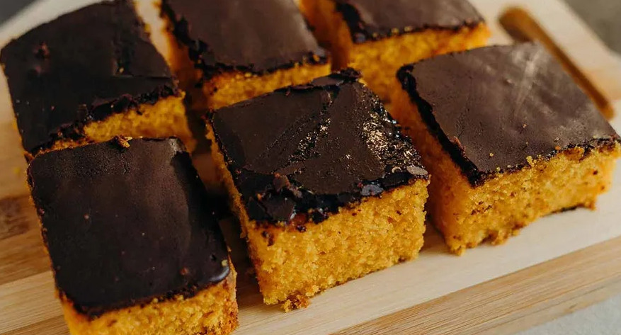

Carrot Cake

Image source: Receitas
Globo
This is a very traditional Brazilian cake. It's made with a basic cake batter blended with raw carrots. The best part is that we don't use milk in
this recipe. So, if you're lactose intolerant, this cake is perfect for you. In Brazil, whenever you see a carrot cake, you'll also find a delicious
chocolate frosting. However, you can skip the frosting if you prefer. It will still be perfect without it.
The recipe is divided into two parts: the batter and the frosting.
Batter
Ingredients
- Three raw, unpeeled chopped carrots (360 grams);
- Four eggs at room temperature
- One teacup of oil
- One and a half teacups of sugar
- Two teacups of all-purpose flour
- One tablespoon of baking powder
- One pinch of salt
- Butter (or other type of fat) and all-purpose flour to grease and flour the cake pan
Steps
- Preheat the oven to a medium temperature (180ºC). Grease and flour a cake pan (it's recommended to use a rectangular one, 30cm x 20cm
with a 5cm height).
- In a bowl, mix and set aside the flour, salt, and baking powder. Sift the flour to ensure a smooth batter.
- Blend the carrots, oil, eggs, and sugar in a blender for five minutes or until the mixture becomes very smooth.
- Transfer the liquid mixture to a large bowl. Gradually add the flour mixture, sifting it in. Mix carefully using a whisk.
- Pour the batter into the cake pan and bake it in the oven for 45 minutes. To check if the cake is ready, insert a fork into the center of the
batter. If it comes out clean, the cake is done. If not, let it bake for a few more minutes.
- Take the cake out of the oven and let it cool for 15 minutes before preparing the frosting. The cake should be slightly warm when you add the
frosting.
Frosting
Ingredients
- Half a teacup of cocoa powder (50% cocoa)
- One-third of a teacup of sugar
- One tablespoon of butter
- One-third of a teacup of water
Steps
- In a small pan, mix the chocolate, sugar, butter, and water. Cook over medium heat, sitirring constantly with a metal whisk. When it starts
boiling, keep mixing for 2 more minutes, or until the frosting forms large bubbles and thickens.
- Remove the frosting from the heat and continue stirring with a silicon spoon.
- Spread the frosting evenly over the cake, covering the entire surface. Let it cool completely. The frost should dry and harden before
serving.
Recipe source: Panelinha
Return to Homepage